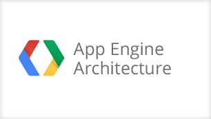
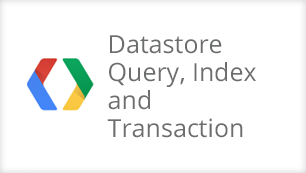

Training
Improve your skills and knowledge on how to design, build, and scale your applications and sites. Our solutions architects have designed training materials that demonstrate how to use Google Cloud Platform products in a variety of solutions.
Videos
-

App Engine Architecture
This lesson introduces how App Engine solves the needs of a real-time earthquake monitor in Japan, in a robust scalable way that handles peak request throughput during earthquakes without needing to keep server resources up and running all the time.
Learn how to configure your App Engine applications to best take advantage of the underlying Google infrastructure, including edge caching and load balancing, to optimize response speed and minimize cost.
-

Managing Your App
What can you do to figure out why your App Engine application fails at times, or even on every request? This presentation shows you how to use the Admin console to configure your application, how to monitor it on a daily basis, and how to troubleshoot it when errors occur.
If your App Engine has a high failure rate, the culprit is often quota errors. Watch to this presentation to understand quotas, learn how to track down and avoid quota errors, and how to estimate and and control your costs by enabling billing and setting a daily maximum budget.
-

User APIs and Authentication
What are the levels of granularity you can implement, to make sure the right people can access your applications, but non-authorized users are kept out? Learn how to configure your apps to be accessible to anyone, or to restrict access to Google Account users, to users at a specific Google Apps domain, or to anyone who has an account with an OpenID provider.
Once your users have logged in, how can you personalize the experience for them? This presentation discusses how to use the Users API to get basic information about the user, and gives code samples to get you on your way to providing a personalized experience for each user.
Learn how to use OAuth to allow a user to grant limited permission to a third party (be it another user or a web application) to access a web application on their behalf.
-

Datastore Introduction
Datastore service in App Engine is the core component of the platform and an essential part of learning App Engine technologies. In this lesson we will cover topics including “What is Datastore?”, “Datastore Internals” and “Datastore Basic Operation”. We will be looking at basic concepts including the difference between a Relational Database and Datastore, scalability, reliability and performance characteristics of Datastore. We will also dive deeper into the underlying technology, Google Bigtable. As basic operations, we will learn Datastore concepts like Entity, Property and Key as well as Datastore APIs.
-

Datastore Query, Index and Transaction
In this lesson, we will cover topics including Datastore Query and Transaction. The Query is one of the most challenging parts on learning App Engine technologies. You will learn what are rules and practices of the Query, and why they are important to enable the high scalability of the service. Then we will look at some workarounds to cope with the restrictions of the Query. In the latter part of the lesson, we will cover Transaction of Datastore. Especially, understanding the Eventual Consistency of the Query is very important to designing consistent and reliable App Engine application. We will examine how Entity Group and Ancestor Query will ensure Strong Consistency of your application.
-

Memcache Basics
Memcache is the most powerful tool to minimize response time and Datastore cost of your App Engine application. In this lesson, we will learn what Memcache is and when to use it. We will also review the Memcache API in both Java and Python and look into some special usage including Batch operation and Atomic operation. In the latter part of the lesson, we present some caveats to know and best practices to use Memcache effectively, including the volatility, non-transactional characteristic, and how Memcache entries can be evicted.
-

Task Queue Basics
This lesson presents an overview and inner workings of the Task Queue.
The task queue has two flavors: push queue and pull queue. The push queue is a great way to schedule a unit of work, such as sending an e-mail, outside of a user request. This prevents blocking the user request while the e-mail is enqueued for delivery. Push tasks are treated as normal http requests, and are executed ASAP on the same app engine application.
The pull queue allows enqueuing tasks that can be leased by workers according to user defined logic. Unlike push tasks, pull tasks are pieces of data that can be accessed from other app engine instances, servers, or external servers.
Learn how to use both push and pull queues as well as fine tune configuration to optimize performance. Also learn how to execute push tasks on a regular schedule using cron jobs.
Are you a developer? Jump right in!
-
Quick Start Guide »
Learn how to get started on Google App Engine and build your next great idea.
-
Download SDK »
Download the SDK to start building your app on Google App Engine.
-
Try it now
Need enterprise level support? Contact sales